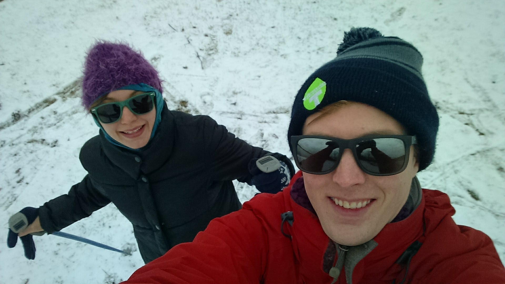
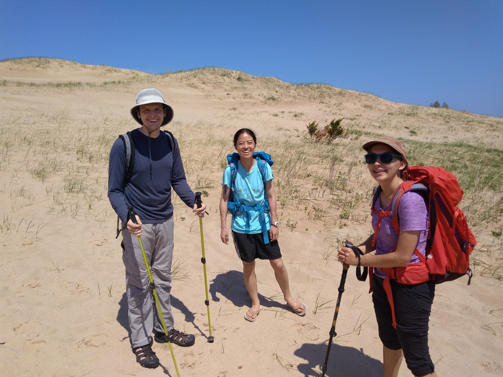
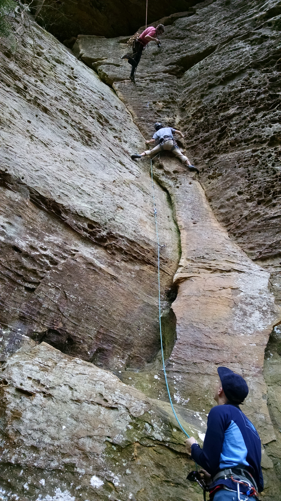
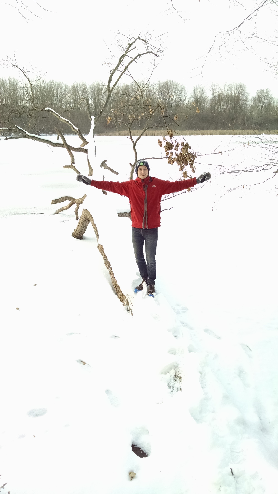

Family
In 2017 I did a New Year's Resolution to do "Sunday Funday", where my wife Valerie Shinabarger and I did an outdoor adventure every single Sunday that year.
Our first Sunday Funday was approximately 8* fahrenheit and super windy.
Ó

Some Sunday Fundays we went on bigger adventures like to Sleeping Bear Dunes

Some Sundays we went rock climbing with friends.

And other days were just plain cold, and we were able to hike right on the frozen Huron River
